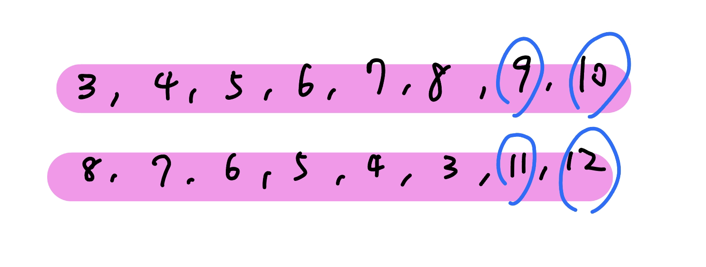

互動題
CF 1867 E2. Salyg1n and Array (hard version) 有一個長度為 \(n\) 的陣列 \(a_1,\ldots ,a_n\) ，目標是輸出 \(a_1\oplus \ldots \oplus a_n\) 。給 \(k\) ，你可以做以下查詢至多 57 次 :
\(\text{query}(i):\) 問 \(a_i \oplus a_{i + 1} \oplus \ldots \oplus a_{i + k - 1}\) 是多少，問了之後，這個區間內的元素就會被 reverse
\(n,k\le 2500,n,k\) 皆為偶數
思路
若 n % k == 0，那我們可以每次從左到右依序詢問長度為 k 的區間即可。若 n % k != 0，代表我們左到右依序詢問長度為 k 的區間後會剩下一段，我們的目標就是將這段的值算出來。可以發現若我們以剩下區間的一半做為 query 的結尾 query 一次，在以 n 作為結尾 query 一次，中間多餘的貢獻會剛好消除

code
#include <bits/stdc++.h>
#define int long long
using namespace std ;
int query ( int i ) {
cout << "? " << i << endl ;
int res ;
cin >> res ;
return res ;
}
void solve () {
int n , k ;
cin >> n >> k ;
int ans = 0 , now = 1 ;
while ( now + k - 1 <= n ) {
int res = query ( now );
ans ^= res ;
now += k ;
}
if ( now < n ) {
int tmp = ( n - now + 1 ) / 2 ;
int res1 = query ( now + tmp - k );
ans ^= res1 ;
int res2 = query ( now + tmp + tmp - k );
ans ^= res2 ;
}
cout << "! " << ans << '\n' ;
}
signed main () {
int t = 1 ;
cin >> t ;
while ( t -- ) {
solve ();
}
}
CF 1918 E. ace5 and Task Order 有一個長度為 \(n\) 的 \(1\sim n\) 的 permutation 以及一個介於 \(1\) 和 \(n\) 之間的正整數\(x\) 。目標是要去確定這個 permutation。可以通過 ? i 進行詢問，返回值有三種：
\(n\leq 2000,\) 詢問次數 \(\le 40n\)
思路
首先，對於一個有 \(O(n^2)\) 次查詢的問題，解答很明顯：對於每個位置 i，持續查詢直到返回等於，然後通過大小關係直接對這 n 個數進行排序，從而獲得答案。
既然排序可以得到答案，我們考慮那些 \(O(n \log n)\) 的排序算法，比如借鑒快速排序的思路。
但我們發現在無法確定 x 是多少個情況下，我們什麼都很難做。所以首先我們必須去能有權力控制 x，而最好的辦法就是知道 1 還有 n 在哪裡，一般題目在分析時也很常從最小和最大開始找。
具體來講，我們只要掃一遍 1 ~ n，對於每個位置，如果詢問返回 < 就繼續查直到不是 < 為止，否則直接不管。顯然這樣最多查詢 O(n) 次（因為 x 最多增大 n 次），並且在 x = 1 的地方一定可以取到 x = 1。我們只要看 x 在哪裡取到最小值即可。找 x = n 同理。
再來，我們借鑑快速排序 的想法，我们需要對值域進行分治。在控制 x 的值不變的情況下，我們需要查詢若干個位置的答案，從而將這些位置分成兩組：「大於 x」 和 「小於 x 」的兩組（等於 x 的位置可以直接得到答案）。遞迴下去就可以得到答案。複雜度 O(n log n)。
參考: https://www.luogu.com.cn/blog/wosile/solution-cf1918e
code
#include <bits/stdc++.h>
using namespace std ;
int p1 , pn ;
int ans [ 2005 ];
int query ( int x ) {
cout << "? " << x << endl ;
cout . flush ();
string s ;
cin >> s ;
if ( s [ 0 ] == '=' ) return 0 ;
if ( s [ 0 ] == '<' ) return -1 ;
if ( s [ 0 ] == '>' ) return 1 ;
return 0114507537 ;
}
int cur ;
void solve ( int l , int r , vector < int >& v ) {
// v 是值在 [l,r] 中的下标集合
if ( l > r ) return ;
if ( l == r ) {
ans [ v [ 0 ]] = l ;
return ;
}
int mid = ( l + r ) / 2 ;
while ( cur > mid ) {
query ( p1 );
cur -- ;
}
while ( cur < mid ) {
query ( pn );
cur ++ ;
}
vector < int > vl , vr ;
vl . clear ();
vr . clear ();
// 分成 [l,mid-1] 和 [mid+1,r]
for ( int x : v ) {
int tmp = query ( x );
if ( tmp == 0 ) ans [ x ] = mid ;
if ( tmp == -1 ) {
vl . push_back ( x );
query ( pn );
}
if ( tmp == 1 ) {
vr . push_back ( x );
query ( p1 );
}
}
solve ( l , mid - 1 , vl );
solve ( mid + 1 , r , vr );
}
int main () {
int T ;
cin >> T ;
while ( T -- ) {
int n ;
cin >> n ;
// find 1&n
p1 = pn = 1 ;
int md = 0x3f3f3f3f , d = 0 ;
for ( int i = 1 ; i <= n ; i ++ ) {
int tmp = query ( i );
d += tmp ;
while ( tmp == -1 ) {
tmp = query ( i );
d += tmp ;
}
if ( d < md ) p1 = i , md = d ;
}
md = -0x3f3f3f3f , d = 0 ;
for ( int i = 1 ; i <= n ; i ++ ) {
int tmp = query ( i );
d += tmp ;
while ( tmp == 1 ) {
tmp = query ( i );
d += tmp ;
}
if ( d > md ) pn = i , md = d ;
}
ans [ p1 ] = 1 , ans [ pn ] = n ;
vector < int > tmp ;
tmp . clear ();
for ( int i = 1 ; i <= n ; i ++ )
if ( i != p1 && i != pn ) tmp . push_back ( i );
int val = query ( pn );
while ( val == 1 ) val = query ( pn );
cur = n ;
solve ( 2 , n - 1 , tmp );
cout << "! " ;
for ( int i = 1 ; i <= n ; i ++ ) cout << ans [ i ] << ' ' ;
cout << endl ;
cout . flush ();
}
return 0 ;
// quod erat demonstrandum
}